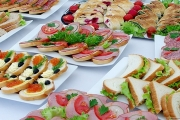

Их подают к кофе или чаю, а также как закуску к различным холодным напиткам. Бутерброды можно готовить на любом хлебе и печенье, диаметром 5–6 см, но особенно вкусны они на слегка поджаренном или подсушенном хлебе. Хлеб лучше брать плотный, не ноздреватый – его легче нарезать на мелкие кусочки и намазывать маслом. Для приготовления четырех– и треугольных бутербродов целесообразно брать формовой и белый хлеб больших размеров: маслом покрыть весь ломоть, который затем разрезать.
С сыром, украшенные розовой точкой• 50 г белого или черного хлеба, 10 г масла, 40 г сыра, томатная паста, сметана.
Намазанный маслом ломтик хлеба покрыть толстым ломтем сыра, посередине его положить горкой томатную пасту, смешанную со взбитым маслом или сметаной.
С сыром и фруктами• 50 г белого хлеба, 15 г сливочного или сырного масла, 10–15 г тертого сыра, толченые орехи, свежие или консервированные фрукты (яблоки, груши, персики и т. п.).
Намазанный сливочным или сырным маслом ломоть хлеба посыпать смесью тертого сыра с толчеными орехами, сверху уложить фруктовую дольку.
С икрой• 50 г белого хлеба, 15 г масла, лимонный сок, соль, 30 г икры, 1 небольшая луковица или зеленый лук.
Для этих бутербродов хороши гренки или свежий белый хлеб. Масло заправить лимонным соком и немного посолить, намазать на хлеб. Ломти хлеба разрезать пополам, покрыть икрой, украсить тонкими кольцами лука или нарезанным зеленым луком.
С печеночным паштетом• 50 г белого хлеба, 10 г масла, 50 г печеночного паштета, коньяк, 1/2 яичного желтка, соль, перец, дольки лимона или соленый огурец или сливы.
Булку подсушить или намазать маслом. Печеночный паштет растереть деревянной ложкой, добавляя коньяк и желток, заправить. Хорошо взбитый паштет при помощи шприца нанести на бутерброд, украсить ломтиками лимона, соленого огурца или сливами.
Пикантные• 50 г белого хлеба, 1 ст. ложка майонеза, 1 ч. ложка томатного пюре, 1 ч. ложка хрена, горчица, сахар, зеленый сыр (в порошке), масло, зелень укропа или петрушки, редис или помидор.
Белый хлеб подсушить или намазать маслом. Майонез смешать с томатным пюре, хреном, горчицей, сахаром и зеленым сыром, достаточно остро заправить. Чайной ложкой или шприцем покрыть смесью разрезанные пополам ломти хлеба, гарнировать зеленью, редиской и помидором.
Вместо последних бутерброд можно посыпать сухим сырным порошком.